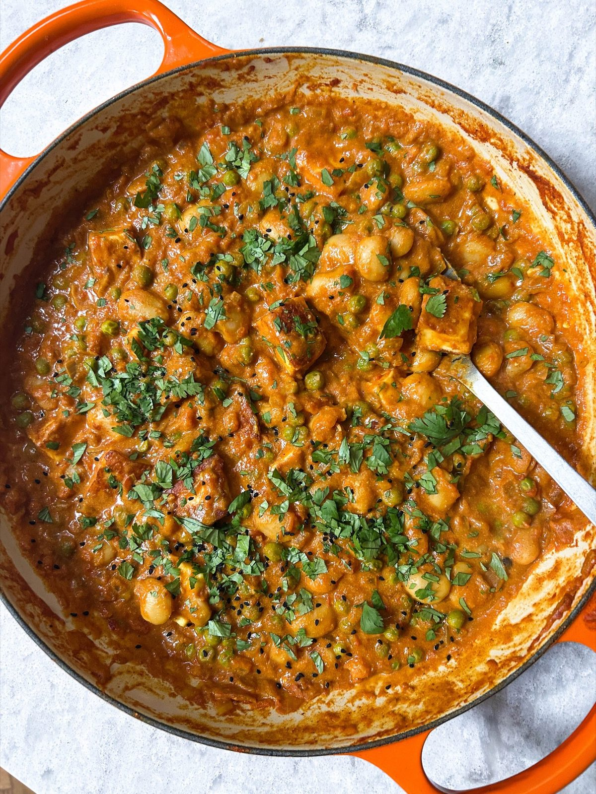

Creamy Halloumi, Pea + Butter Bean Curry
A mildly spiced tomato curry of butter beans and peas, finished with fried halloumi, yoghurt and mango chutney.

Ingredients
To serve
Method
Stops your screen dimming and locking while your hands are busy. It switches off when you leave this page.
- Heat the 2 tbsp neutral oil in a large pan over a medium heat.
- Add the 1 onion and cook for 8-10 minutes until softened.
- Add the 3 garlic cloves and the ginger root and cook for a further 2 minutes until fragrant.
- Add the 1 tbsp tomato purée, 2 tsp ground cumin, 2 tsp garam masala, 1 tsp ground coriander, 1 tsp ground turmeric and ½ tsp chilli powder with a small splash of water, stirring to make a paste.
- Fry for a couple of minutes, until the purée turns deep red and everything smells fragrant.
- Pour in the 400g tin of chopped tomatoes and the 75g frozen peas with a pinch of salt and stir to combine.
- Cook for 8-10 minutes, until the peas have turned from vibrant green to a more muted green.
- Meanwhile, heat a little oil in a separate non-stick frying pan over a medium heat.
- Fry the 200g halloumi for 2-3 minutes on each side, until golden.
- Pour the 660g jar of butter beans and their liquid into the tomato sauce and stir to combine.
- Simmer gently for 3-4 minutes to warm through.
- Fold the fried halloumi gently into the sauce.
- Stir in the 1-2 tbsp Greek yoghurt, using more if you like it creamier, and the 1 tsp mango chutney.
- Check the seasoning and adjust to taste.
- Serve into bowls with rice or naan, scattered with the coriander and a sprinkle of nigella seeds.
Notes
- The liquid does the work of thickening the sauce, so use the jar liquid rather than draining it.
- An unsweetened coconut or soy yoghurt works in place of the Greek yoghurt.
Source: https://boldbeanco.com/blogs/beanspo-recipes/creamy-halloumi-butter-bean-curry-with-peas